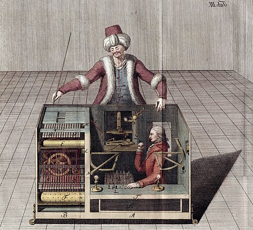
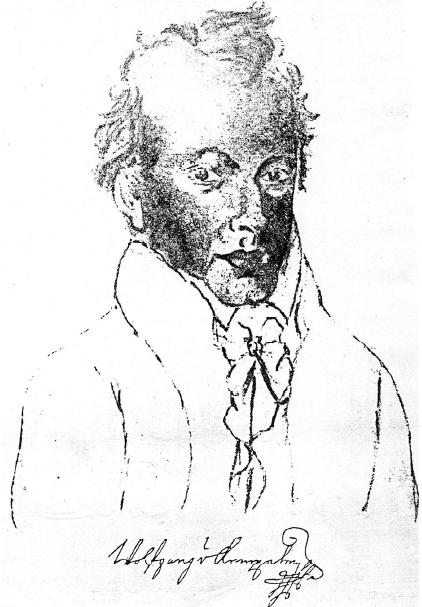
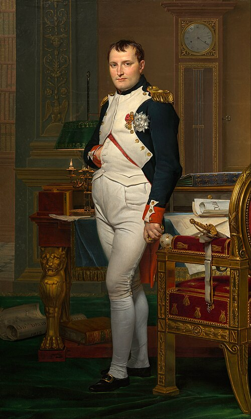
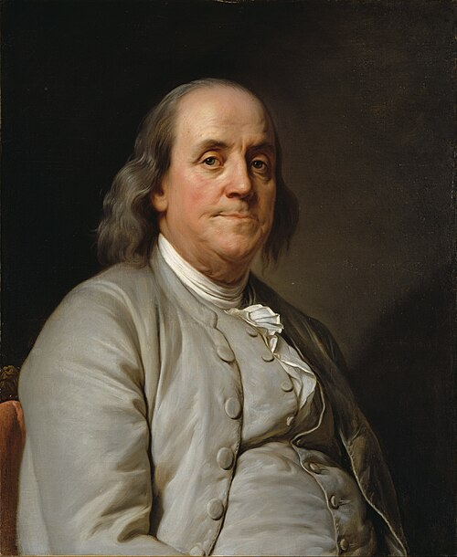
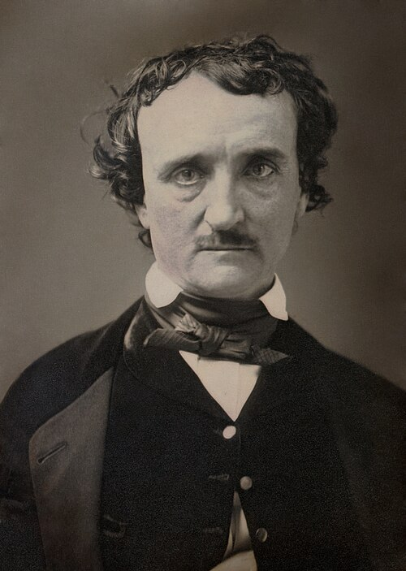

The game of kings — 1,500 years of strategy, brilliance, and the eternal battle between order and chaos on 64 squares.
The goal is to checkmate the opponent's king — put it under attack with no legal escape. A player in check must resolve it immediately: block, capture, or move the king.
Games can also end in draws: stalemate (no legal moves, king not in check), threefold repetition, the 50-move rule, or mutual agreement.
Castling — King moves two squares toward a rook; the rook jumps over. Requires neither piece has moved, no pieces between them, king not in check or passing through check.
En Passant — A pawn that advances two squares can be captured by an adjacent enemy pawn as if it had moved only one square. Must be taken immediately.
Promotion — A pawn reaching the 8th rank is promoted to any piece (almost always a queen).
Classical — 90–120 min per player; used in World Championship matches.
Rapid — 10–60 min. Blitz — 3–5 min. Bullet — 1–2 min. Ultrabullet — under 1 min.
Fischer Clock — Invented by Bobby Fischer: each move adds a few seconds (increment) to prevent flagging with one second left.
Created by physics professor Arpad Elo in 1960. Ratings update based on the expected vs actual result. Win against a higher-rated player = big gain; lose = bigger loss.
Beginners start ~800. Club players ~1200–1600. Masters ~2200+. Grandmasters ~2500+. The highest ever recorded: Magnus Carlsen at 2882 in 2014.
Piece values are approximate — context always matters. A bishop pair on an open board may outperform two rooks in certain endgames. The king, priceless in play, is the only piece that cannot be exchanged.
Modern engines (Stockfish, Leela) compute dynamic values that shift as position changes — a rook behind a passed pawn is worth far more than its nominal 5 points.
Nimzowitsch called pawns "the soul of chess." Pawn structure dictates strategy: isolated pawns are weak but create space; passed pawns are potential queens; doubled pawns lose flexibility.
The pawn is the only piece that cannot move backward — every advance is a permanent commitment.
"Winning the exchange" means trading a bishop or knight (~3 pts) for a rook (5 pts). Players constantly evaluate trades: equal material, winning material, or sacrificing for positional/tactical gains.
Grandmasters often sacrifice material for compensation: open files, active pieces, king safety, or a decisive attack that engines eventually validate.
Long-range pieces (queen, rook, bishop) grow stronger as the board opens up — more squares to cover, longer lines of attack.
Short-range pieces (king, knight) are less position-dependent. Knights thrive in closed positions where long-range pieces are blocked by pawns.
1. Control the center — e4, d4, e5, d5 are the key squares. Pieces radiate from center control.
2. Develop pieces — Get knights and bishops off the back rank quickly. Don't move the same piece twice in the opening without reason.
3. Castle early — King safety first. Castling connects the rooks and hides the king from central attacks.
4. Don't bring the queen out early — It can be chased by minor pieces, wasting tempi.
Hypermodernists challenged classical dogma: instead of occupying the center with pawns, provoke and attack it from the wings with bishops and pieces.
The Réti Opening (1.Nf3), Nimzo-Indian (1.d4 Nf6 2.c4 e6 3.Nc3 Bb4), and King's Indian Defense all embody this philosophy — let White build a big center, then undermine it.
After Deep Blue defeated Kasparov in 1997, engines reshaped opening theory. Moves once considered objectively bad were rehabilitated; long-accepted "best" lines were refuted overnight.
Modern players prepare 30–40 moves deep in critical lines, memorizing engine evaluations. The Berlin Defense, once considered passive and boring, became the dominant elite response to 1.e4 because engines showed it gives Black a rock-solid draw.
Published in the 1970s by Chess Informant, ECO codes classify every major opening: A00–A99 (flank/irregular), B00–B99 (semi-open), C00–C99 (open — 1.e4 e5), D00–D99 (closed), E00–E99 (Indian).
Over 1,327 named variations. New ones are added as theory evolves — the "anti-Berlin" systems generated dozens of new ECO entries in the 2010s alone.
Alexander Kotov's "Think Like a Grandmaster" introduced the concept of identifying candidate moves — a shortlist of plausible options — before calculating each line to its conclusion. This prevents blundering by overlooking a key move.
Top players calculate 5–10 moves ahead in critical positions, seeing the board in their mind without moving pieces.
German for "in-between move" — instead of making the expected recapture or reply, a player inserts an unexpected intermediate move that improves their position or creates a stronger threat.
Example: instead of recapturing a piece, deliver check first, forcing the king to move before recapturing. This often gains material or destroys the opponent's coordination.
The romantic era of chess (1800s) glorified sacrifices. Mikhail Tal — the "Magician from Riga" — built a World Championship career on speculative sacrifices that defied computer analysis for decades.
Modern theory distinguishes: sound sacrifices (engine-validated), speculative sacrifices (compensation unclear but practical), and positional sacrifices (long-term structural advantage).
Endgames are solved positions: with few pieces on the board, accuracy is everything. The opposition (two kings facing each other with an odd number of squares between), the Lucena position, and the Philidor position are essential knowledge.
Tablebase — exhaustive computer analysis — has solved all 7-piece endgames. Some positions require 500+ moves to force checkmate, far beyond any human's capacity to calculate.


In 1770, Hungarian inventor Wolfgang von Kempelen unveiled an extraordinary creation before the court of Empress Maria Theresa: a chess-playing automaton dressed in Ottoman robes, seated behind a large cabinet. The figure could apparently play a strong game of chess against any human challenger — and win.
It was called The Turk, and for 84 years it would mystify, astonish, and deceive the greatest minds of the Enlightenment.
The cabinet beneath the chess table contained a series of compartments. Before each performance, von Kempelen would dramatically open each door to show the audience the clockwork machinery inside — but the compartments were arranged so that a hidden human operator could slide between sections as each door opened.
Magnets beneath the board tracked the positions of chess pieces. The operator inside could see the board through a hidden peephole and manipulate the Turk's arm via a system of levers and pulleys.
The cabinet was filled with elaborate but non-functional clockwork — gears, levers, and cylinders that looked impressive but served only to fool the audience into thinking the machine was mechanical. The clockwork made convincing noises when wound up.
The actual chess moves were executed by the human operator who controlled a mechanical arm connected to the Turk figurine above. The operator used a candle for light and a pantograph to track the board state.
Several strong chess masters operated the Turk over its 84-year history. The most notable was Johann Allgaier, a Vienna chess master who operated it in the early 1800s. Later operators included William Lewis and Jacques Mouret, both strong players of their era.
The operators were chosen for both chess skill and physical compactness — the cabinet space was extremely confined, requiring flexibility and the ability to remain still for hours during exhibitions.
Operating inside the cabinet was physically grueling. The operator had to manage a candle for light — the smoke was vented through a pipe hidden in the Turk's pipe-stem prop. The heat inside the cabinet during long demonstrations could be intense.
When the Turk checkmated an opponent, the figurine would nod its head three times — a signal controlled by the operator inside via a separate lever mechanism.

Napoleon was famously defeated by the Turk in Paris — though accounts suggest he tried to cheat twice, moving pieces illegally to test the machine's reaction. The Turk responded each time by replacing the piece to its correct position and nodding disapprovingly.
Napoleon reportedly lost three times and was so frustrated that he swept the pieces off the board. The Turk operator inside — reportedly Allgaier — reportedly laughed. Napoleon later requested a second session.

Benjamin Franklin, serving as American Ambassador to France, played the Turk during its Paris tour and was defeated. Franklin was a keen chess player and one of the first Americans to write about the game — his 1779 essay "The Morals of Chess" was the first chess publication in America.
Unlike many skeptics, Franklin accepted the loss graciously. He did not believe the machine was truly mechanical but admitted he could not determine the deception mechanism.
Catherine the Great of Russia was among the Turk's most high-profile opponents during its European tour. The Turk's reputation as a chess-playing wonder brought it before the greatest rulers and thinkers of the age.
After von Kempelen's death in 1804, the Turk was sold to Johann Nepomuk Mälzel, a showman and inventor who brought it to America. Mälzel toured it as entertainment alongside his famous "Panharmonicon" musical automaton.
Mälzel toured the Turk across American cities including New York, Boston, Philadelphia, Baltimore, and Richmond — where Edgar Allan Poe encountered it in 1836. The machine played public matches against challengers, drawing massive crowds.
The Turk lost only about 7% of its games during documented tours — a remarkable record reflecting the skill of its hidden operators. It used a standard chess strategy with aggressive openings and precise endgames.

In 1836, Edgar Allan Poe published "Maelzel's Chess-Player" in the Southern Literary Messenger — a meticulous logical argument that the machine must contain a human operator. Poe never definitively proved it, but his reasoning was sound: a purely mechanical system could not handle the variability of chess.
Poe's key argument: "Arithmetical or algebraical calculations are, from their nature, fixed and determinate. The Algebraist... works his way to the result... by a succession of unerring steps... But with the Chess-Player, the case is widely different."
The full truth was revealed in 1857 by Silas Weir Mitchell in The Chess Monthly, using testimony from one of the operators' relatives — Jacques Mouret's nephew. Mitchell named the operators, described the mechanism in detail, and ended the 87-year mystery.
By this time, the Turk had already been destroyed: it was lost to a fire at the Chinese Museum in Philadelphia in 1854, where Mälzel's estate had donated it. The most famous automaton in history perished in the flames.
After Mälzel died aboard a ship in 1838, the Turk passed through several owners before being donated to the Chinese Museum in Philadelphia. On July 5, 1854, the museum caught fire and the Turk was destroyed — more than 80 years after its creation.
Contemporary reports described the fire consuming the museum's collections. One account noted that as the Turk burned, its voice box (used to say "échec" for check) emitted strange groans — the last sounds of the most famous chess player never to have existed.
Charles Babbage, inventor of the Difference Engine (an early mechanical computer), was fascinated by the Turk and played against it. He wrote that it helped inspire his interest in automating calculation — wondering whether truly mechanical thought might be possible.
The Turk raised, for the first time in mass culture, the question of whether machines could think — a question that would define the 20th century and launch the field of artificial intelligence.
In 2005, Amazon launched its crowdsourcing platform Amazon Mechanical Turk — deliberately named after von Kempelen's automaton. The service lets software applications direct humans to perform tasks that computers cannot do well.
The naming is apt: like the original Turk, the platform creates the illusion of automated intelligence while actual humans do the thinking behind the scenes. The motto: "Artificial Artificial Intelligence."
Alan Turing explicitly referenced chess-playing machines in his 1950 paper "Computing Machinery and Intelligence" — the paper that introduced the Turing Test. The long history of chess automata (real and fraudulent) provided the cultural backdrop for serious questions about machine cognition.
The Turk's 84-year run demonstrated that humans would readily believe a machine was thinking if the outputs were convincing enough — a psychological insight that proved prophetic for the AI era.
When IBM's Deep Blue defeated Kasparov in 1997, commentators noted the irony: for 200 years, chess automata had been fraudulent; now a real machine had finally achieved what the Turk only pretended to do.
Von Kempelen could not have imagined that his theatrical deception would seed a tradition of thought that culminated in genuine artificial chess mastery. The Turk was fake — but the questions it raised were entirely real.